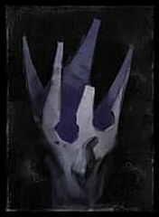

01 / visual log
visual log
02 / tangent
interactive

volition
Subdue the regrets. Dust yourself off. Proceed. You'll get it in the next life. Do what you can with this one while you're alive.
press any key to continue
a small archive of photographs, passing thoughts, and the things i keep coming back to. welcome to my archive.
01 / visual log
visual log
02 / tangent
interactive